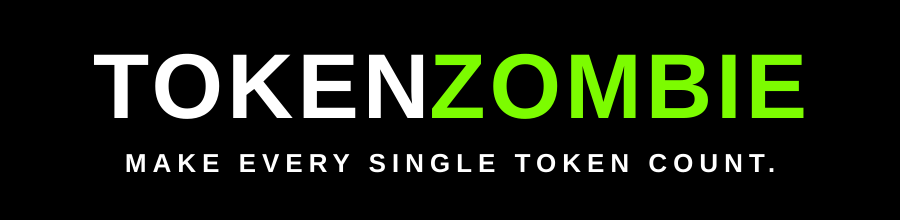
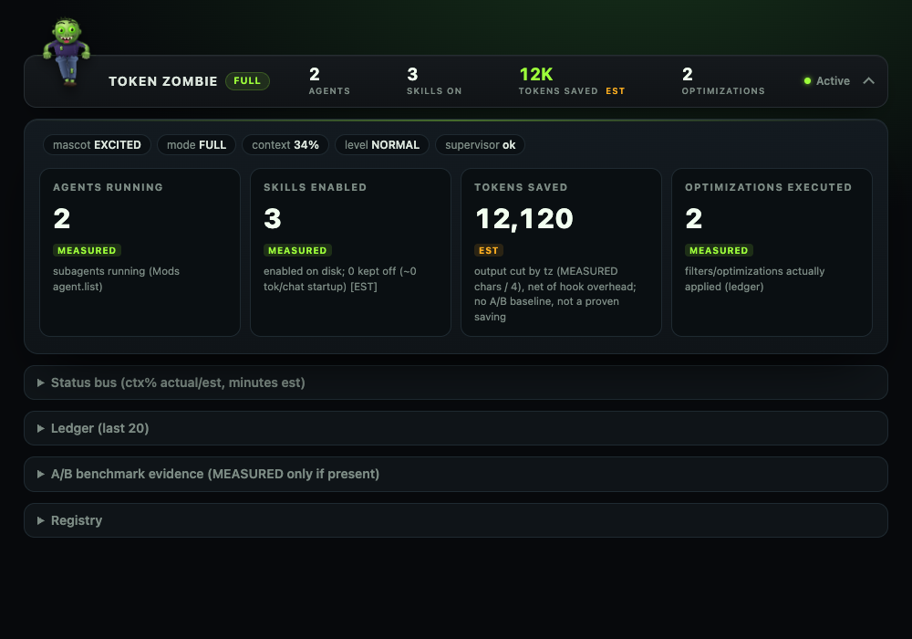
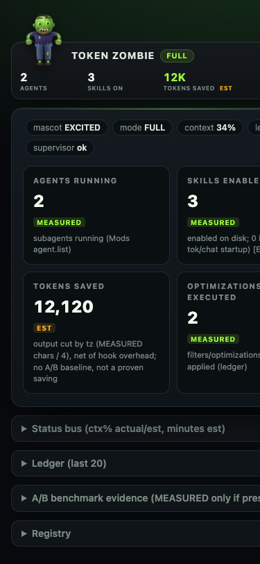

MAKE EVERY SINGLE TOKEN COUNT.
Your AI agents need
resource intelligence.
See what your Claude Code agents consume. Detect inefficient patterns. Protect context and continuity. Keep control of your workflow.

Interface preview · demo data, not measured production savings.
THE PROBLEM
Agent work is growing.
Visibility is not.
Long conversations, repeated context, agent activity and tool output can make resource use hard to understand. TOKEN ZOMBIE adds a local layer for observing activity and protecting unfinished work.
The goal is not to cut tokens at any cost. It is to use resources deliberately while preserving useful work and quality.
One local control layer
- See resource signals and agent activity.
- Get evidence-backed workflow advice.
- Keep originals recoverable where trimming is supported.
- Carry project state into the next session.
OBSERVE · DETECT · OPTIMISE · PROTECT
What it does
A practical set of local capabilities, with measurements labelled honestly and host-dependent behaviour called out.
01 / OBSERVE
Resource visibility
Local hook ledger, token and cache signals, agent activity and clear MEASURED / EST / UNKNOWN labels.
02 / DETECT
Workflow signals
Flags for repeated reads, large context loads, duplicate or low-value agent activity and rework patterns.
03 / OPTIMISE
Reversible optimisation
Supported output trimming, recall of originals, Python AST skeleton compression and shadow-mode advice.
04 / PROTECT
Continuity and recovery
Compaction checks, handoffs, checkpoints and a project state that helps a new chat continue the work.
SEE THE INTERFACE
A dashboard for the work behind the prompt.
The dashboard and mascot captures in this repository use demo data. The in-chat toolbar is implemented, but a verified public capture is not yet published.
Explore toolbar details →
TRANSPARENT DEVELOPMENT
What works. What comes next.
Available in the codebase
18-event hook ledger, SQLite ledger, handoffs/checkpoints, output trim and recall, Python AST skeleton compression, dashboard and toolbar components. Some host behaviours still need live verification.
Validation and next priorities
Real-host verification, real A/B trials, stronger resource attribution and improved agent-state intelligence.
Planned
Semantic retrieval, broader language-aware compression and a task-level vault index. These are not shipped features.
Experimental
Non-Claude adapters currently produce rules files only; they do not offer equivalent hooks or statusline integration.
START IN CLAUDE CODE
Try TOKEN ZOMBIE.
Install the plugin, restart Claude Code, then inspect the current session's status.
/plugin install token-zombie --marketplace rishavm713-create/token-zombie
Then run /token-zombie:tz.
LOCAL BY DESIGN
Your workflow stays yours.
Core hooks make no network calls, send no telemetry and make no model calls. Advice is non-blocking. Read the security and limitations documents before enabling optional integrations.
Security model → · Known limitations →